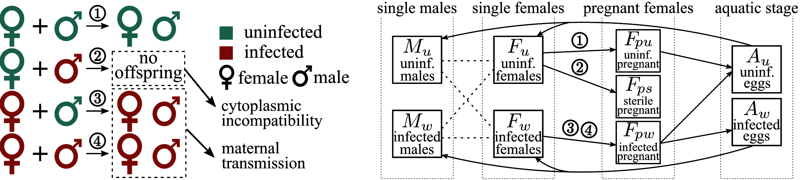
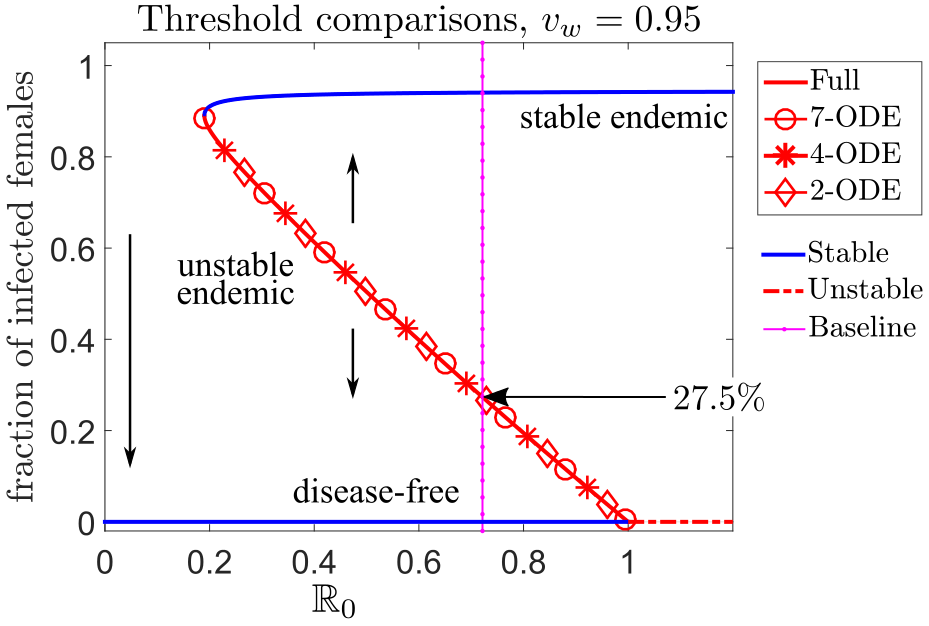
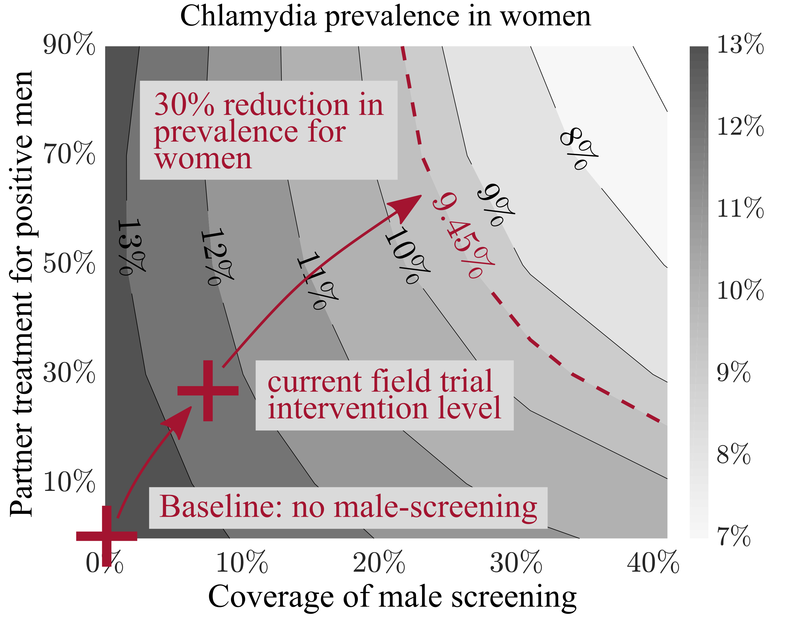
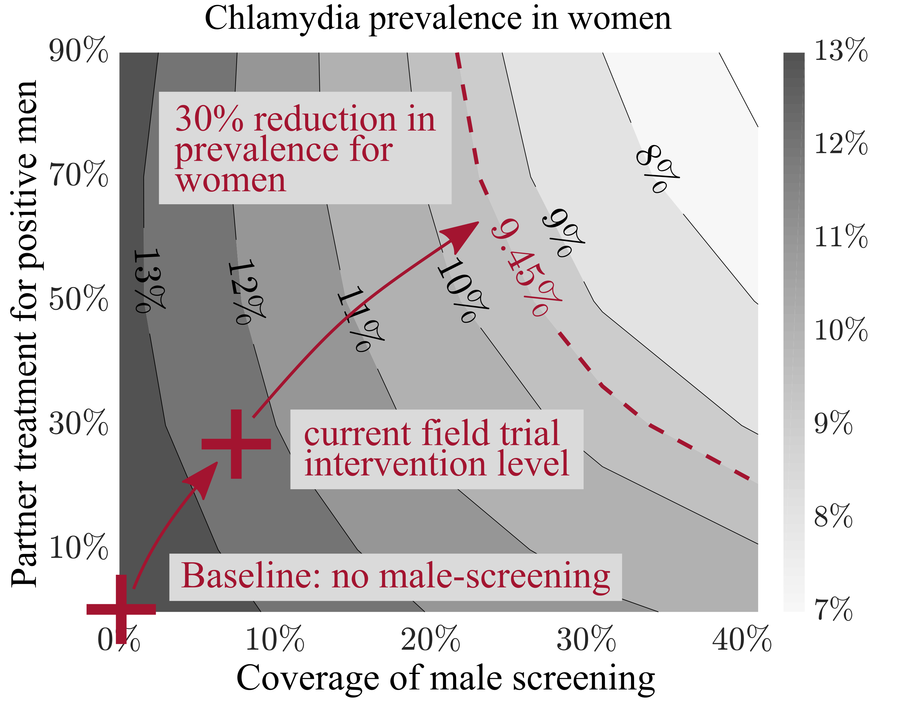

Zhuolin Qu
Research Interests
I believe that epidemic modeling can foster knowledge of
the disease transmission dynamics, forecast the spread, and
optimize mitigation efforts. For these models to be useful,
they must
-
have a solid mathematical formulation from realistic biology and
-
be solved accurately using numerical methods.
These two themes are the core of my studies. I
develop computational tools that advance the fields in both
mathematics and biology.
Mosquito Control using Wolbachia
Wolbachia is a natural bacteria present in up to 60% of insect species but not found in Aedes aegypti (Ae. aegypti) mosquito, the primary vectors transmitting the Zika and dengue viruses. When Ae. aegypti mosquitoes gain Wolbachia infection, it reduces the ability of mosquitoes to spread the mosquito-borne diseases. Video from World Mosquito Program
We develop and analyze multiscale models to quantify a threshold for creating a sustained infection in wild mosquitoes.

Left: Maternal transmission of Wolbachia from
infected females to their offspring. Right: A 9-ODE
compartmental system captured the detailed maternal
transmission routes and complex mosquito life-cycle.

Model Reduction Starting from the original
9-ODE model, we derived a hierarchy of reduced models to
approximate the solutions of the original 9-ODE model while
retaining the key properties, such as basic reproductive
number, the backward bifurcation behavior of the system.
Collaborators
James Mac Hyman (Tulane University), Ling Xue (Harbin Engineering University, China), Dawn Wesson (Tulane School of Public Health and Tropical Medicine), Panpim Thongsripong (California Academy of Sciences, San Francisco).
Media coverage on our research
Forbes
Magazine Math
Horizons Los
Alamos Monitor The
Times-Picayune New Orleans SIAM
research nugget
Sexually Transmitted Disease - Chlamydia
Chlamydia is the most commonly reported sexually
transmitted disease in the United States. Untreated
asymptomatic infections may cause permanent damage to the
women’s reproductive system. Routine screening is
recommended for women with risk factors to identify these
"silent" infections.
We develop and analyze stochastic and individual-based model to simulate the chlamydia epidemic on dynamic sexual networks, and we evaluate the efficacy of screening high-risk men to cont rol chlamydia prevalence in women.
Read more about the "Check It" Program.
 
Left: Chlamydia epidemic spread over a static sexual network. Larger nodes (person) have more neighbors (sexual partners). The infection status of each person is tracked using the Susceptible (Green) - Infectious (Red) - Susceptible (SIS) framework. Right: Model prediction for the impact of male screening on the prevalence in women under different intervention coverage. Darker region gives a higher Chlamydia prevalence in women.
Collaborators
James
Mac Hyman (Tulane University) Patricia
Kissinger (Epidemiology, Tulane) Asma
Azizi (Arizona State University) Charles
Stoecker (Global Health Management and Policy, Tulane)